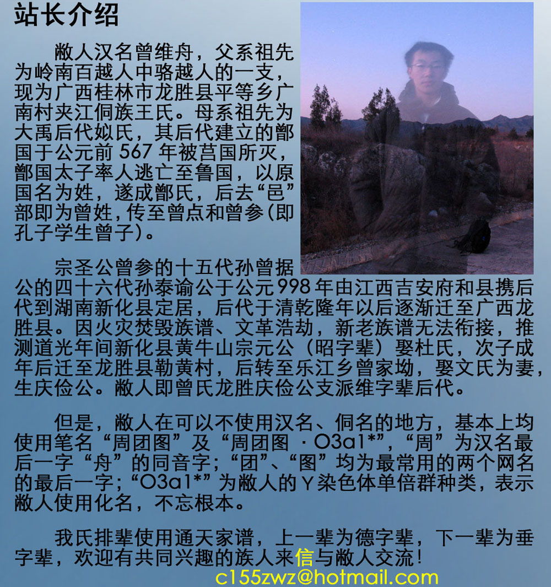

天文 |
气象 |
板路 |
折腾 |
老本行 |
本站 |
|
首页→本站→站长介绍

天文经历（慢慢想，慢慢加）：
1997年03月09日 通过漠河日食电视直播首次知道此现象
1998年08月22日 于桂林龙胜中学首次见到日偏食
1999年左右 开始阅读天文书籍
2002年左右 得到舅舅赠送的76700地平式牛顿反射望远镜
2003年12月 首次对流星雨（GEM）进行正式观测
2004年 首次在天文刊物上发表文章
2004年06月08日 于桂林龙胜中学成功观测金星凌日
2005年07月05日 于北京天文馆新馆楼顶首次看、拍到铱星闪光
2005年07月 参加第三届牧夫论坛交流会（青岛）
2006年05月 参加第四届牧夫论坛交流会（赤峰）
2007年夏至左右 于北京香山首次成功观测ISS马拉松（6圈）
2008年08月01日 于桂林龙胜中学成功观测日偏食
2008年10月 担任北京天文馆科普志愿者，任期半年
2008年10月10日 于北京北清路首次成功独立观测ISS凌月
2008年12月14日 于北京石塘路首次进行流星雨的无线电监测
2009年04月24日 获得国际流星组织观测员代码：ZENWE
2009年07月10日 于北京天通苑附近成功观测ISS马拉松（5圈）
2009年07月22日 于武汉桂子山顶成功观测日全食
2010年01月15日 于大理洱海东岸成功观测日环食
2010年08月 参加第一届全国天文社团发展论坛（内蒙）
2010年11月 参与首届WWT宇宙漫游制作大赛并获二等奖
2011年08月 参加第二届全国天文社团发展论坛（杭州）
2011年12月10日 于北京古北口成功观测月全食和双子雨
2012年06月06日 于太原山西大学成功观测金星凌日
2012年06月11日 于北大理二楼顶成功观测ISS马拉松（5圈）
2012年08月 参加第三届全国天文社团发展论坛（威海）
2013年08月 参加第四届全国天文社团发展论坛（广州）
2014年10月08日 于桂林市琴潭村成功观测月全食
2014年11月02日 越城岭天文台开工
2015年02月02日 建立本网站，开始内测
2015年02月17日 本网站公测
2015年04月04日 于桂林龙胜实验中学观测到月全食的复圆过程
气象经历（慢慢想，慢慢加）：
2010年06月17日 于桂林龙胜县首次有意识地经历中尺度对流复合体
2010年06月19日 于桂林龙胜县首次有意识地经历飑线
2012年06月06日 于太原山西大学首次有意识地见到日华
2012年06月09日 于北大理二楼顶首次见到雨幡、乳状积云
2012年06月15日 于北京成府路首次见到荚状层积云
2012年07月20日 于桂林八里街见到浓积云发展成鬃状积雨云
2012年07月30日 于桂林龙胜县见到幻日
2012年07月30日 于桂林龙胜县首次见到明显的积云顶�b状云结构
2012年08月01日 于桂林龙胜县首次见到伪卷云
2012年11月04日 于北京经历由温带气旋导致的多相态降水过程
2012年12月28日 于内蒙赤峰敖汉旗首次见到钻石尘和车灯光柱
2013年02月20日 首次在卫星云图上见到卡门涡街
2013年06月09日 于北大理二楼顶首次见到地面上可见的最大霓虹
2013年06月11日 于北大理二门口首次见、摸到冰雹
2013年07月16日 于桂林龙胜县见到月华
2013年08月14日 于广州市首次与台风风圈接触（1311“尤特”）
2015年03月23日 策划复苏央视的《气象信息》节目
发表文章：
我见到了双子座流星雨[J].天文爱好者,2004,(2):
天赐通讯――地面电磁信号传播[J].博物,2008,(12):
陪你去听流星雨――流星余迹通讯[J].博物,2008,(12):
都是太阳惹的祸[J].博物,2008,(12):
关掉灯，还你一片星空[J].中国国家天文,2009,(12):
2014年天文普及年历同人本，自行编撰剽窃排版印刷发行。
使用PS在云图上标记观测地位置(上)[J].天文爱好者,2014,(10):
使用PS在云图上标记观测地位置(下)[J].天文爱好者,2014,(11):
2015年月掩星表[J].2015年天象大观,2014:88-93
教育情况：
1995.09-2001.07 在 山腰小学 学习
2001.09-2004.07 在 山腰小学隔壁中学 学习
2004.09-2006.07 在 野鸡大学附属中学 学习
2006.09-2009.07 在 野鸡大学生物学系 学习
2013.10-2014.01 在 圣玛丽学园西点系 学习
工作情况：
2008.10-2009.07 在 自行车被偷不让报警研究所 实习
2011.03-2012.08 在 要马跑得快还不让吃草中心 工作
专业技能：
琼脂糖凝胶电泳
十二烷基硫酸钠-聚丙烯酰胺凝胶电泳
Western印迹法
BCA蛋白浓度检测法
天然产物的提取分离
动物细胞培养、融合、保藏
微流控管道的制作、键合
种蘑菇、种菜、种花、种西瓜（这个并不是
普通动、植物标本的制作
树脂植物、动物、蕈类标本的制作
小型动物透明骨骼染色标本的制作
第二专业技能：
面包制作：汉堡包、吐司、贝古、牛角、花式面包 等
西点制作：戚风、慕斯、布丁、布蕾、手工巧克力、简单裱花 等
干点制作：曲奇、姜饼、斑点狗、基础饼干 等
中点制作：包子、馒头、糖三角 等
天然酵母的培育、筛选、保藏
非专业技能：
初级玻璃灯工
光学经纬仪的使用
基础生命支持
两天内大气环流分析
掩星现象的预报
流星群的目视正式观测
一些没用的技能：
中国手语，可进行基本对话。
北京手语，可进行基本对话。
基于普通话的唇语，勉强能看懂。
中国盲文，现行盲文勉强可以明盲互译，双拼盲文没戏。
四角号码查字法。
吹奏竹笛，筒音5、2、1、6（练习中）。
叶脉书签的制作。
在B站发裸眼3D弹幕= =...